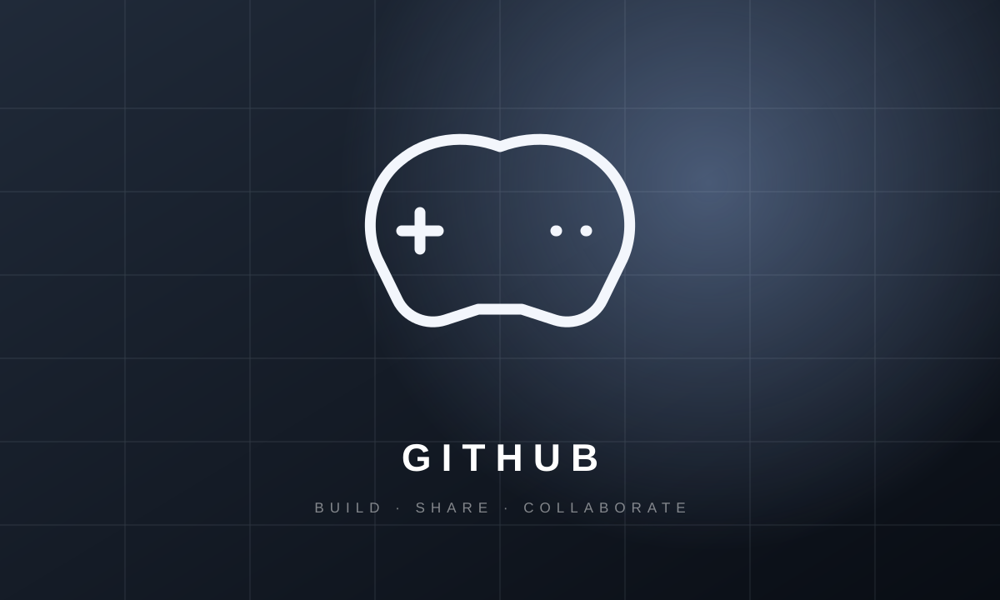
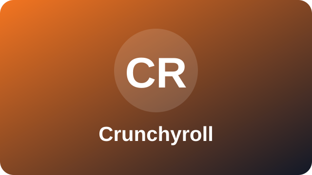
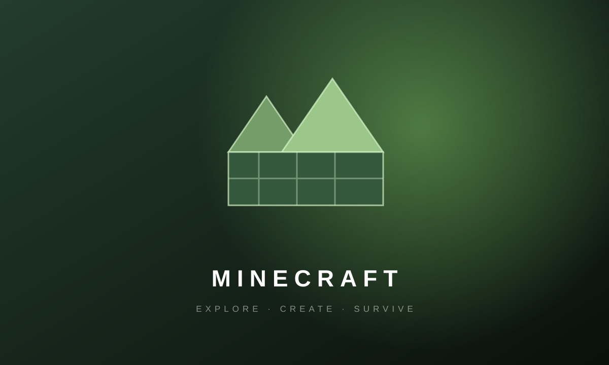

YouTube
Explorar YouTubeGitHub

Explorar GitHubCrunchyroll

Explorar CrunchyrollSpotify
Explorar SpotifyMinecraft

Explorar MinecraftMinha seleção pessoal
Uma coleção de lugares na internet que inspiram, entretêm e fazem parte da minha rotina.

Explorar GitHub
Explorar Crunchyroll
Explorar Minecraft